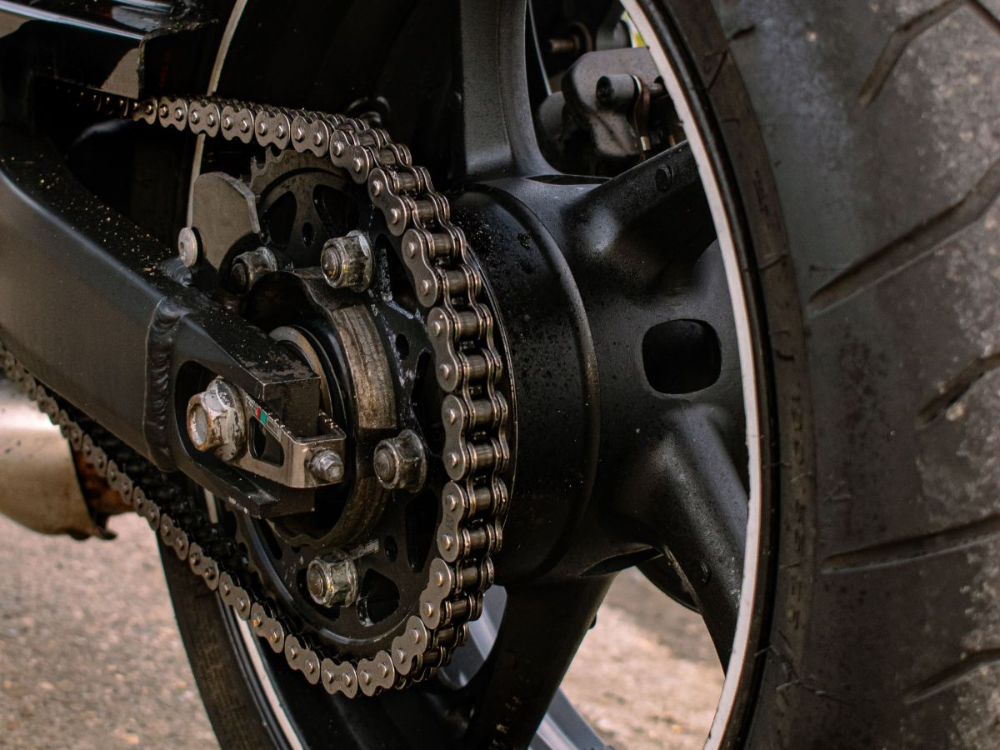
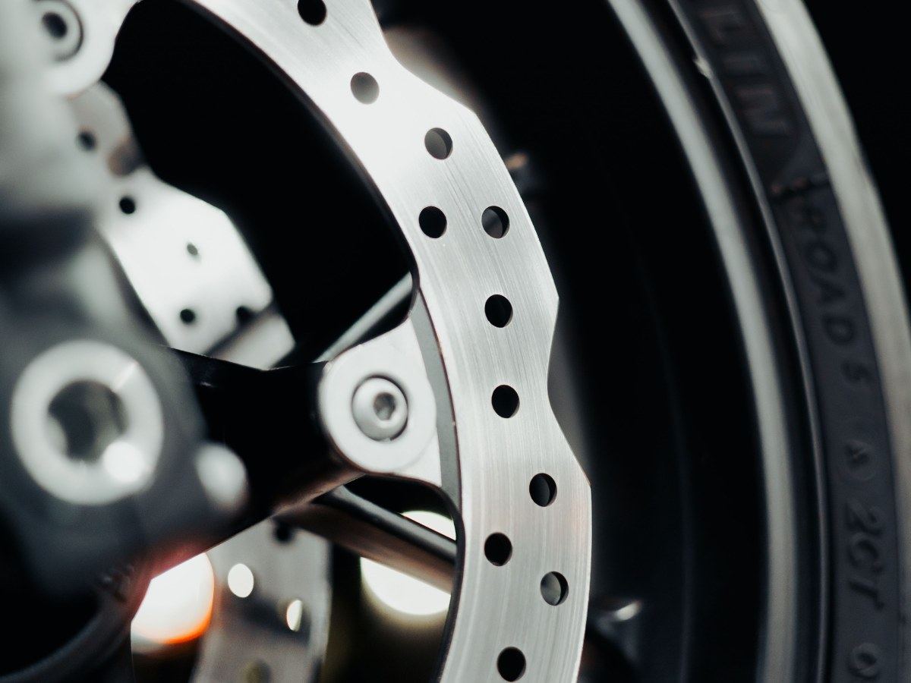
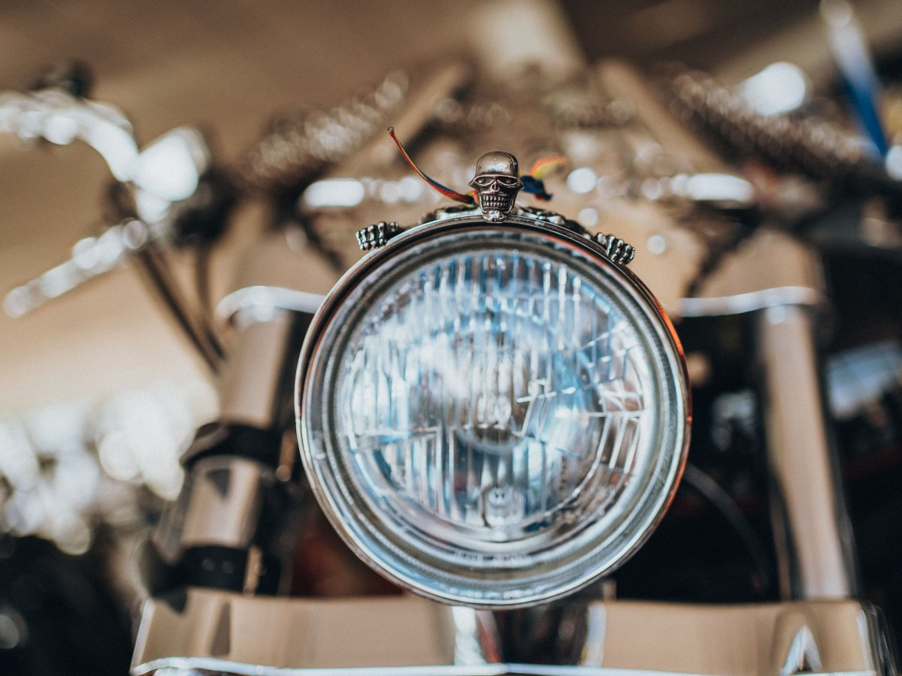
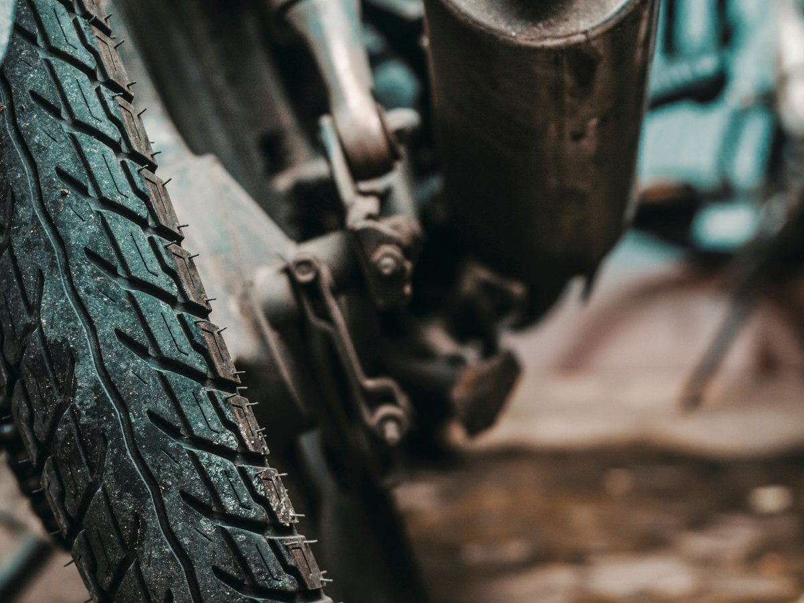
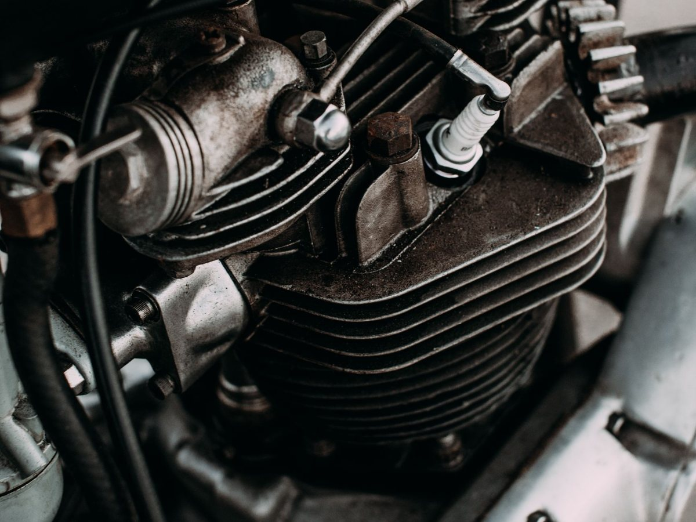
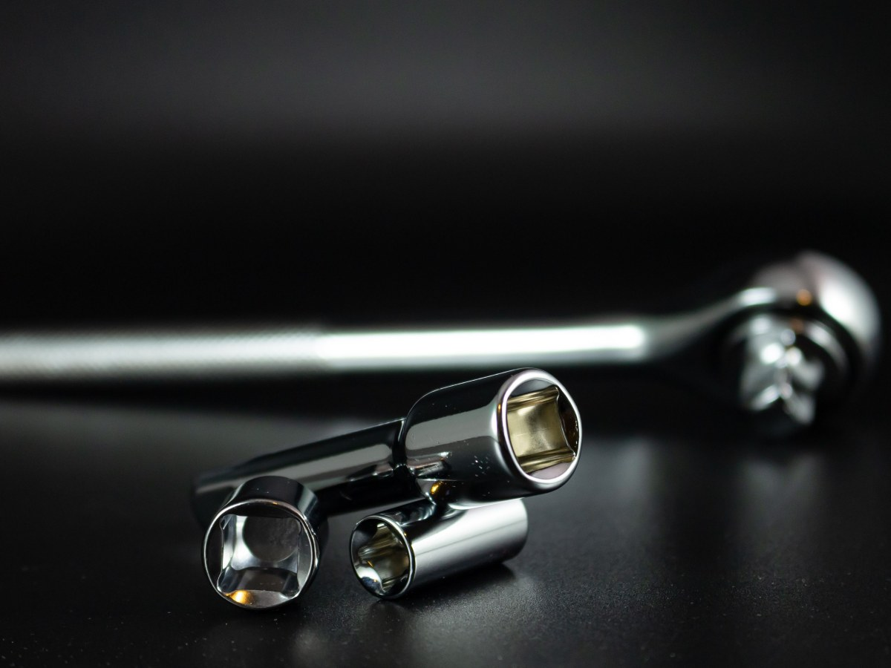
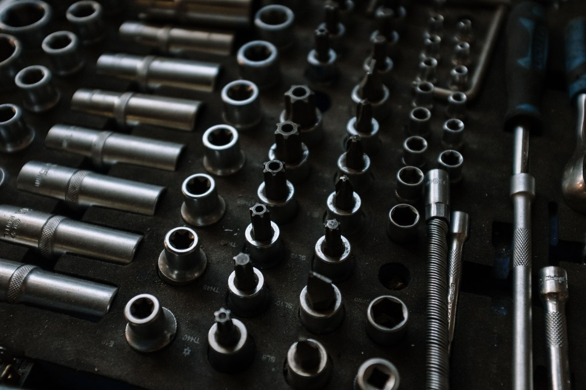
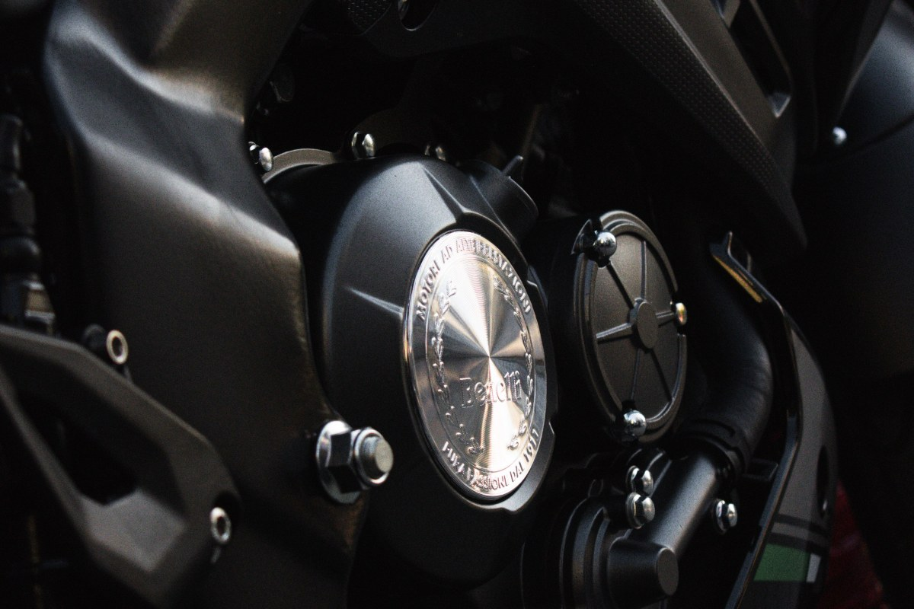
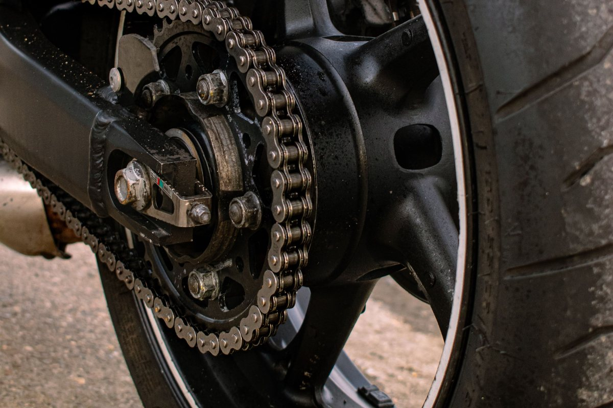

Puente Alto · mecánica de motos
La moto no puede parar
114 reseñas y el mecánico llega donde estás. Acá está qué se resuelve en el lugar.
- 114reseñas en Google
- 4puntos de la revisión express
- 0talleres a los que llevarla
- 0sitio propio: el subdominio gratuito que tenían hoy no carga
Para el que reparte
La moto que trabaja
-
La express entre turnos
Una revisión corta antes de salir o al terminar. Se mira lo que deja botado:
- cadena
- frenos
- luces
- neumáticos
-
Donde estés
En el punto de espera, afuera del local o en la casa. Sin perder la tarde llevándola.
-
A la hora que sirve
Temprano, antes del primer pedido, o tarde cuando se corta el turno.
-
Qué sale ahí y qué no
La mantención se resuelve en el lugar. Lo que pide abrir el motor se dice de frente.
Lo que hay que mandar
Cuatro datos y queda resuelto en un mensaje.
- Moto
- Marca, modelo y año
- Sector
- Dónde está parada
- Síntoma
- Qué hace o qué dejó de hacer
- Hora
- Desde qué hora puedes
Los horarios y lo que entra en la revisión son una propuesta.
Si la moto es el sueldo, el taller va a ella.
Qué se hace
Lo que se resuelve en el lugar
-

Transmisión
Cadena y corona
Ajuste, limpieza y cambio.
-

Frenos
Antes de que chillen
Revisión y cambio de pastillas.
-

Eléctrico
Luces y batería
Lo que más deja botado de noche.
-

Ruedas
Neumáticos
Presión, desgaste y cambio.
-

Mantención
La que toca
Aceite y filtros al día.
-

Revisión
Qué tiene
Qué urge y qué puede esperar.
Los seis son una propuesta de secciones: lo que hace de verdad lo confirma el mecánico.
Ciento catorce reseñas, y la web era un subdominio gratis que hoy ni siquiera responde.
Google y el dominio .site, probados el 16-09-2026
El banco de trabajo
Llaves, cadena y una rueda arriba



Fotos de referencia: ninguna es del taller.
Dónde llega
Cobertura y contacto
- Puente Alto centro
- Bajos de Mena
- San Carlos
- Las Vizcachas
- La Florida
- Pirque
- +56 9 8722 6460
- Comuna
- Puente Alto
El horario y la cobertura exacta no están escritos en ninguna parte. Es lo primero que pregunta alguien con la moto botada.
Para el mecánico
Qué es real y qué falta
Lo verificado
Las 114 reseñas, el teléfono y que el subdominio gratuito no responde, probado el 16-09-2026.
Lo de ejemplo
Los sectores, los horarios, los seis servicios y todas las fotos. La nota promedio no se muestra.
Lo que falta
Un dominio propio con la cobertura y los servicios escritos. Un repartidor busca a las siete de la mañana, no en redes.